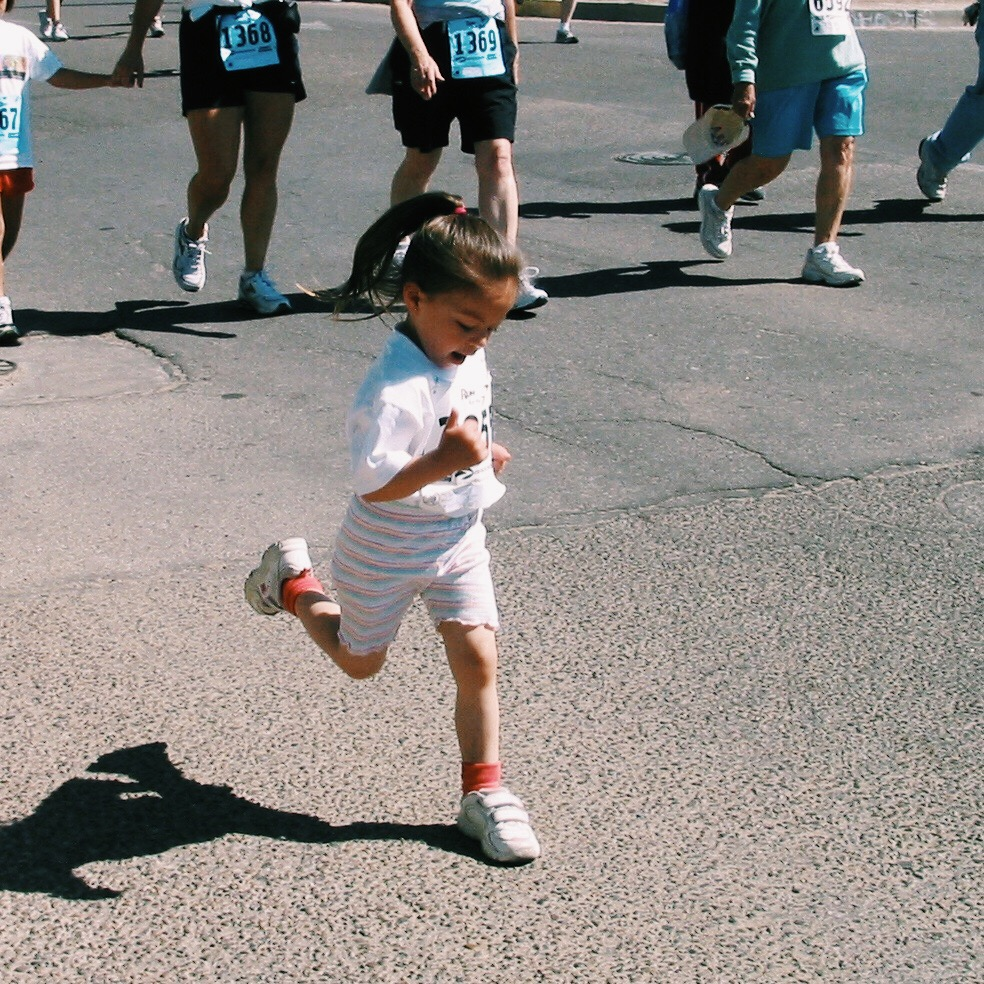
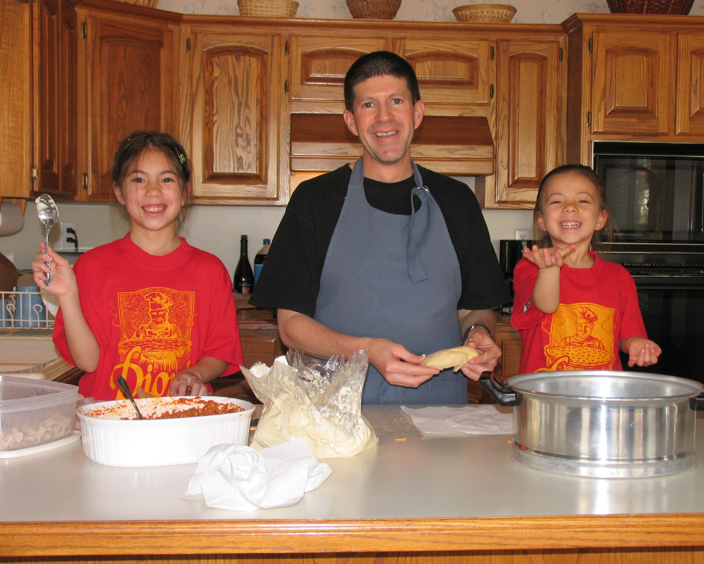

My Interests
Running
Running is my favorite way to decompress. Whether I am listening to music, reflecting and letting my mind wander, or running with friends, this is my outlet. Running is also a great way to explore and discover new and beautiful places! I used to run track in high school, and the longest distance I have ever run was a marathon during my senior year of high school!
Baking and Cooking
I love baking for my friends and family! In middle school, my friends and I always talked about our own cupcake business, and since then we love baking cookies, cakes, and cupcakes together! My greatest source of inspiration? The "Hello, Cupcake!" cookbooks! I also love cooking with my parents, sister, and grandparents. Learning family recipes and sharing good food with one another are some of my favorite memories.
Photography and Sunsets
I have a slight obsession with sunrises, sunsets, and generally, beautiful skies. I love to watch the sun rise over the mountains, and I’ve seen so many sunsets that I’ve learned how to predict a good one. I have a special sunset spot at home that I love to drive to in the evenings to watch the sun set over the city.
Throughout my life, my dad has always been interested in photography. During high school, he started to teach me more about photography techniques. I'm especially interested in time-lapse and landscape photography. In fact, my quest for finding beautiful places runs so deep that I completed a 3000-mile, 3-week road trip with my dad, creating time-lapse videos of the sun and clouds moving acorss the Southwestern sky.
Music
I love alternative, punk, and modern rock! My favorite band since middle school has been Panic! at the Disco, and I also love The Killers, The Strokes, The National, The 1975, Foo Fighters, Pearl Jam, The Cure, and more!